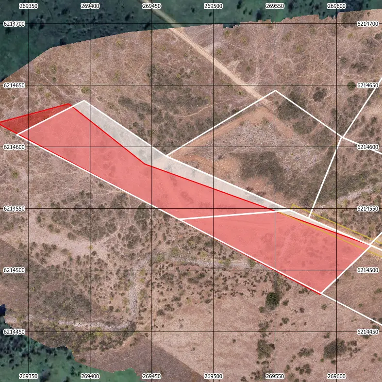

Rectificación de deslindes con dron
Para saber exactamente dónde terminan los límites de tu terreno. Volamos el predio y medimos dónde están hoy los cercos, muros y canales, para compararlos con lo que dice la escritura. Así sabes si la superficie que compraste es la que realmente tienes, y cuántos metros están en discusión si no coinciden.
Desde $350.000 + IVA
Referencia para un terreno de hasta 60 hectáreas en la Región Metropolitana. En la calculadora ves el valor de tu terreno según superficie y ubicación. El precio final lo conversamos según lo que necesites, el plazo, la extensión real y el formato de entrega.

Cuándo se pide
Los motivos más frecuentes son concretos: antes de comprar o vender un terreno, para verificar que la superficie sea la que dice el papel; antes de subdividir un predio; cuando hay una diferencia con un vecino por un cerco corrido; o cuando el plano que existe es antiguo y describe los límites por referencias ("hasta el canal", "siguiendo el camino") en vez de coordenadas.
Qué incluye el entregable
- Ortomosaico del predio y su entorno inmediato.
- Coordenadas UTM de cada vértice materializado.
- Superficie real ocupada, comparada con la del título.
- Superposición del plano de escritura sobre la imagen.
- Informe técnico con metodología y diferencias detectadas.
Importante: entregamos el levantamiento técnico y su respaldo gráfico. La fijación legal de deslindes y la regularización de títulos requieren además la intervención de los organismos competentes.
Cuándo conviene hacerlo
Antes de comprar
Verificar que la superficie y los límites que se venden coincidan con lo cercado y ocupado.
Diferencias con un vecino
Un cerco corrido o un canal desviado quedan documentados con precisión y fecha cierta.
Regularización o subdivisión
Base topográfica para el plano que exige el trámite, con las superficies calculadas.
Predios rurales grandes
Kilómetros de cerco que a pie tomarían días se cubren en una jornada.
Servicios relacionados: se apoya en el mismo vuelo de fotogrametría aérea, se entrega sobre el ortomosaico del predio y suele acompañarse de curvas de nivel cuando se va a subdividir. Puedes estimar el valor en la calculadora o leer el detalle del proceso en cómo se hace un levantamiento para deslindes.
Preguntas frecuentes
¿Tiene validez legal?
¿Qué precisión tienen los vértices?
¿Sirve si el cerco está bajo árboles?
Cuéntanos de tu proyecto
Te respondemos en menos de 24 horas hábiles con alcance, plazo y valor.